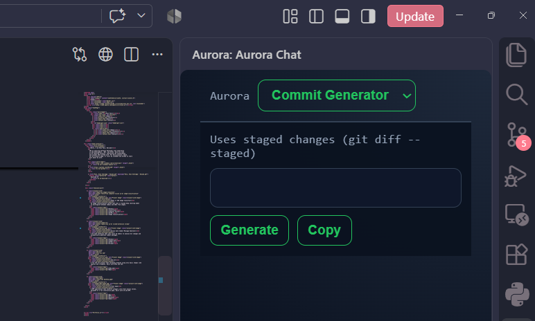

Hello, I am Evan Palo, Welcome!
I’m an aspiring Software Developer with experience in web development, .NET, and AI/ML. Here are some of my featured projects, showcasing the technologies and systems I’ve worked with. For more projects, check out my Projects page, or visit my LinkedIn and GitHub to learn more about my work.
Sedan vs SUV Image Classifier
An image classification system that uses a trained deep learning model to distinguish between sedans and SUVs from images.

Aurora Auto Commit Message Generator
A VS Code extension that uses local AI models to analyze Git changes and automatically generate commit messages.

CSS Art
A fun CSS art project that recreates Pikachu using only basic shapes like squares and triangles. Built with HTML and CSS.

8 Bit Game
A WPF application that converts integers into 8-bit binary values, designed as a fun interactive game. Built with C# and WPF.